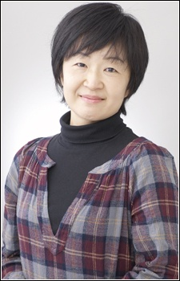
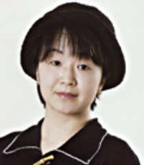
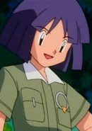

Hiromi Ishikawa is a Japanese actress and voice actress. She is represented by 81 Produce and Caramel Box.
- Gender: Female
- Birthday: November 12, 1961
- Hometown: Tokyo, Japan

|  |
Hiromi Ishikawa is a Japanese actress and voice actress. She is represented by 81 Produce and Caramel Box.
|
 |
|---|
|  | Bugsy | Pokemon | Bugsy is Azalea Town's gym leader. He is an expert on Bug-Type Pokemon. He is an nondescript gym leader. |